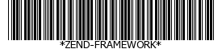

Zend_Barcode utiliza um método de fábrica para criar uma
instância de um renderizador que estende
Zend_Barcode_Renderer_RendererAbstract. O método de fábrica
aceita cinco argumentos.
O nome do formato de código de barras (por exemplo, "code39") (obrigatório)
O nome do renderizador (por exemplo, "image") (obrigatório)
As opções do objeto código de barras (uma matriz ou objeto
Zend_Config) (opcional)
As opções do objeto renderizador (uma matriz ou objeto
Zend_Config) (opcional)
Booleano indicando se a renderização automática dos erros está ativada. Se
ocorrer uma exceção, o objeto código de barras fornecido será substituído por
uma representação de erro (opcional, padrão TRUE)
Exemplo 59. Recuperando um Renderizador com Zend_Barcode::factory()
Zend_Barcode::factory() instancia objetos código de barras
e renderizadores no mesmo laço. Neste primeiro exemplo, vamos usar o tipo código de
barras Code39, juntamente com o renderizador
Image.
// Somente o texto a ser escrito é necessário
$barcodeOptions = array('text' => 'ZEND-FRAMEWORK');
// Não há opções necessárias
$rendererOptions = array();
$renderer = Zend_Barcode::factory(
'code39', 'image', $barcodeOptions, $rendererOptions
);
Exemplo 60. Usando o Zend_Barcode::factory() com objetos Zend_Config
Você pode passar um objeto Zend_Config para a fábrica, a fim
de criar os objetos necessários. O exemplo a seguir é funcionalmente equivalente
ao anterior.
// Usando apenas um objeto Zend_Config
$config = new Zend_Config(array(
'barcode' => 'code39',
'barcodeParams' => array('text' => 'ZEND-FRAMEWORK'),
'renderer' => 'image',
'rendererParams' => array('imageType' => 'gif'),
));
$renderer = Zend_Barcode::factory($config);
Quando você desenha o código de barras, você recuperar o recurso em
que o código de barras é desenhado. Para desenhar um código de barras, você pode chamar
o método draw() do renderizador ou simplesmente usar o método
de proxy fornecido pelo Zend_Barcode.
Exemplo 61. Desenhando um código de barras com o objeto renderizador
// Somente o texto a ser escrito é necessário
$barcodeOptions = array('text' => 'ZEND-FRAMEWORK');
// Não há opções necessárias
$rendererOptions = array();
// Desenha o código de barras em uma nova imagem
$imageResource = Zend_Barcode::factory(
'code39', 'image', $barcodeOptions, $rendererOptions
)->draw();
Exemplo 62. Desenhando um código de barras com Zend_Barcode::draw()
// Somente o texto a ser escrito é necessário
$barcodeOptions = array('text' => 'ZEND-FRAMEWORK');
// Não há opções necessárias
$rendererOptions = array();
// Desenha o código de barras em uma nova imagem
$imageResource = Zend_Barcode::draw(
'code39', 'image', $barcodeOptions, $rendererOptions
);
Quando você renderiza um código de barras, você desenha o código de barras, envia os
cabeçalhos e envia também o recurso (à um navegador, por exemplo). Para renderizar um
código de barras, você pode chamar o método render() do
renderizador ou simplesmente usar o método de proxy fornecido pelo
Zend_Barcode.
Exemplo 63. Renderizando um código de barras com o objeto renderizador
// Somente o texto a ser escrito é necessário
$barcodeOptions = array('text' => 'ZEND-FRAMEWORK');
// Não há opções necessárias
$rendererOptions = array();
// Desenha o código de barras em uma nova imagem,
// enviar os cabeçalhos e a imagem
Zend_Barcode::factory(
'code39', 'image', $barcodeOptions, $rendererOptions
)->render();
Isso gerará este código de barras:

Exemplo 64. Renderizando um código de barras com Zend_Barcode::render()
// Somente o texto a ser escrito é necessário
$barcodeOptions = array('text' => 'ZEND-FRAMEWORK');
// Não há opções necessárias
$rendererOptions = array();
// Desenha o código de barras em uma nova imagem,
// enviar os cabeçalhos e a imagem
Zend_Barcode::render(
'code39', 'image', $barcodeOptions, $rendererOptions
);
Isso gerará o mesmo código de barras do exemplo anterior.